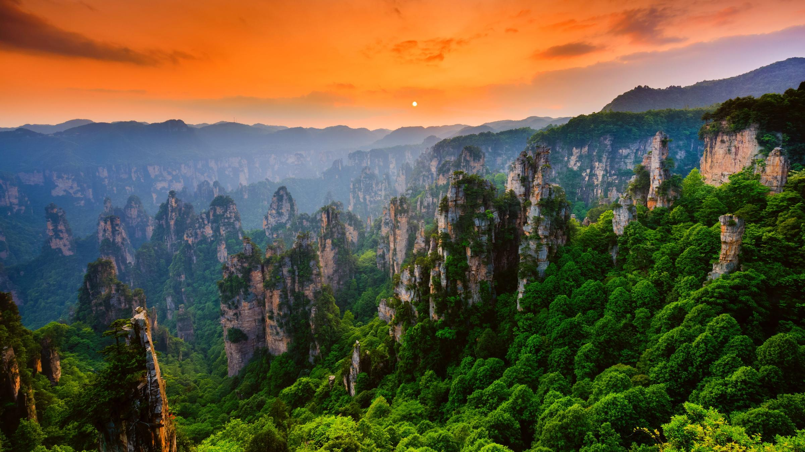

Pilares rochosos
Estruturas verticais de arenito formam paisagens singulares, com grandes variações de altura e formatos.
CHINA · LESTE ASIÁTICO
Um cenário de montanhas monumentais, pilares rochosos e florestas que revelam algumas das paisagens naturais mais impressionantes da China.
China

CONHEÇA O DESTINO
Zhangjiajie está localizada na província de Hunan, no centro-sul da China. A região é conhecida por suas formações rochosas verticais, montanhas cobertas por vegetação e paisagens frequentemente envolvidas por neblina.
Sua importância natural e geológica tornou o local um dos destinos mais conhecidos da China para o turismo de natureza.
LOCALIZAÇÃO E GEOGRAFIA
Zhangjiajie está situada na província de Hunan, em uma região caracterizada por montanhas, vales, rios e florestas.
Suas famosas formações de arenito foram esculpidas por processos naturais de erosão ao longo de milhões de anos, originando pilares rochosos de diferentes alturas e formatos.
Os pilares rochosos são uma das características geológicas mais marcantes da paisagem de Zhangjiajie.
PAISAGENS NATURAIS
A região reúne ecossistemas florestais, montanhas e formações geológicas de grande valor ambiental.
Estruturas verticais de arenito formam paisagens singulares, com grandes variações de altura e formatos.
A vegetação cobre grande parte da região, contribuindo para a biodiversidade e para a aparência característica das montanhas.
Os vales profundos e as condições atmosféricas locais criam paisagens frequentemente envolvidas por nuvens e neblina.
PONTOS TURÍSTICOS
Área protegida conhecida por seus pilares de arenito, trilhas e paisagens montanhosas.
Região montanhosa famosa por seus picos, vales e vistas panorâmicas das formações rochosas.
Conhecida por suas paisagens montanhosas, pelo arco natural Tianmen Cave e por suas trilhas panorâmicas.
Região de vales, vegetação e formações naturais, conhecida também por sua ponte de vidro.
CULTURA E TRADIÇÕES
A região de Zhangjiajie possui uma diversidade cultural associada à presença de diferentes grupos étnicos, especialmente as comunidades Tujia e Miao.
Essas comunidades preservam manifestações culturais relacionadas à música, à dança, ao artesanato, às celebrações e aos costumes tradicionais.
As tradições das comunidades locais representam uma parte importante da identidade cultural da região.
INFORMAÇÕES TURÍSTICAS
A região apresenta clima subtropical úmido, com verões quentes e chuvosos e invernos mais frios.
A primavera e o outono costumam oferecer condições agradáveis para caminhadas e observação das paisagens naturais.
Trilhas, passeios panorâmicos, observação de formações rochosas e visitas a áreas naturais estão entre as principais experiências.